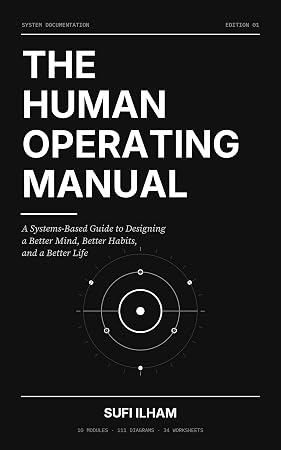
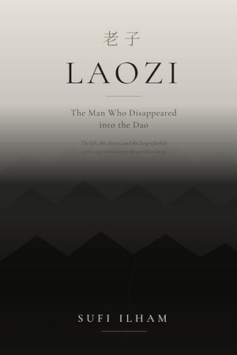
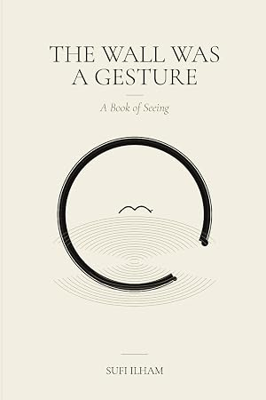
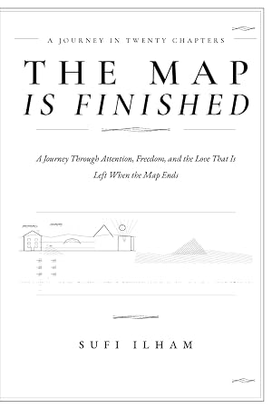
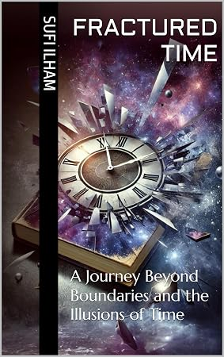
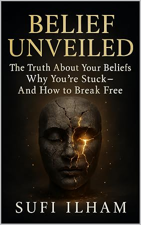

Featured · New Release
The Human Operating Manual
The manual you should have been issued at birth. 111 diagrams, 34 worksheets and 10 system modules that treat your life as a living system of energy, emotion, attention and habit.
An author, deep thinker and seeker of truth exploring belief, consciousness and identity — writing that challenges societal norms and asks you to question every assumption you inherited.
From the architecture of belief to the illusion of time, from ADHD and attention to the quiet freedom of simply seeing — and now five small-town love stories in Maple Falls, Vermont. Fifteen books, one pursuit: the truth, however uncomfortable.

"You are not broken. You are running old settings — and settings can be changed."
You are the most complex machine on the planet, and you were shipped with zero documentation. So you've done what everyone does with an undocumented machine: pushed the same three buttons harder. More motivation. More discipline. More guilt.
Written in the calm, precise voice of a premium hardware manual — with 111 original diagrams, 34 write-in worksheets and 10 complete system modules — it treats your life as what it actually is: a living system of energy, emotion, attention and habit, connected by feedback loops you can learn to read and adjust.
No 4 a.m. alarms. No hype. No pretending Tuesday won't happen.
Stop gripping outcomes — start adjusting settings.
Every title by Sufi Ilham — in Kindle and paperback, worldwide on Amazon. Click any book to read more.
The manual you should have been issued at birth. 111 diagrams, 34 worksheets and 10 system modules that treat your life as a living system of energy, emotion, attention and habit.

Moh is the love that grips; prem is the love that asks nothing back. Thirty-two contemplations on the boundary between attachment and love — for the reader awake at 2 a.m.

The ancient Sanskrit path of selfless, unconditional love — from the bhakti poets, the Sufis, the Upanishads and the Buddha.

A biography of a man whose historical footprint is almost invisible and whose philosophical shadow stretches across two and a half millennia — with a guided reading of the Daodejing in twelve movements.

A philosophical work in twenty-two chapters — from the quiet sense of being a separate self to the peace of seeing that the world was never outside you.

"The map is not the country. Walk until you know the difference." One continuous journey in twenty chapters through attention, freedom, and what remains when the map ends.
Uncover the hidden strengths of ADHD — creativity, fast thinking, hyperfocus — and design a life that works with your brain instead of against it.

What if time isn't real — but a beautiful lie you've been hypnotized into believing? A bold unraveling of one of the greatest illusions you've ever lived by.

A journey into the hidden architecture of your mind, revealing how unconscious beliefs silently dictate your reality — and exactly how to rewrite them.
Life never stopped teaching — most of us simply stopped attending. A journey of learning from birth to beyond, for those brave enough to turn the page.
Some towns change your life. This one will steal your heart. Welcome to Maple Falls, Vermont — a small town at the end of a maple-lined street, where the bookshop keeps its lights on, the bakery keeps its ovens warm, and every love story gets the happily-ever-after it deserves.
Grumpy sunshine. Enemies to lovers. Second chances. Snowdrifts. Fireworks. One town where everyone gets their ending — and all five books are free to read on Kindle Unlimited.

She came to sell a bookshop. The bookshop had other plans.
A burned-out Manhattan editor inherits her late aunt’s failing bookshop — and collides with the grumpy carpenter who has loved the place his whole life.

She bakes. He reviews. They’ve been enemies for thirty years — they just didn’t know it.
A fallen food critic, the small-town baker he once destroyed, and one perfect pear cardamom pie that undoes thirty years of silence.

She was always leaving. He never learned how to let go. Christmas had other plans.
A city girl who always leaves, a single-dad dairy farmer who never does, and a seven-year-old’s letter to Santa asking for someone who will stay.

He left ten years ago. She stayed and built a life. Now he’s back — and this time, he’s staying.
Ten years after he left for Silicon Valley, he’s back with city shoes and a second chance. She’s not sure she wants to give it.

The whole town is getting married. The fire chief never wanted to attend a wedding again.
A wedding planner who doesn’t believe in her own love story, and the fire chief who stopped believing in weddings eight years ago.
Start with Book 1, or jump in anywhere — Maple Falls will save you a seat.
The hidden architecture beneath your relationships, career and happiness — and the fact that architecture can be rebuilt.
Why the obsession with past and future silently steals a life, and what remains when the clock loses its authority.
A thread one breath long. The whole art is the returning — in meditation, in focus, in ordinary Tuesday afternoons.
Not doctrine, not self-help. Something older: philosophy with a heartbeat, offered without asking you to believe anything.
The map is not the country. Walk until you know the difference.— The Map Is Finished
Sufi Ilham, also known as MD Naiyer Alam, is an author, deep thinker, and seeker of truth who explores belief, consciousness, identity, and self-discovery.
“Sufi Ilham” is a name I gave myself. To me, it represents the meaning I live — a reminder that life is not merely something to exist through, but something to understand, question, and experience authentically.
My writing challenges inherited beliefs and societal conditioning, inviting readers to question assumptions rather than accept them blindly. I explore the raw and often uncomfortable realities of existence, philosophy, human nature, and the search for truth.
I believe authenticity begins when we dare to look beyond what we have been taught and discover what is genuinely our own.
Through my words, I seek to inspire transformation — to break free from conditioning, confront reality without fear, and live with greater clarity, courage, and awareness.
Sufi Ilham is not just a name. It is a way of being.
The debut. A journey into the hidden architecture of the mind — and how to rewrite it.
The most talked-about title. What if time isn't real, but a beautiful lie?
Learning from birth to beyond — for those brave enough to keep attending.
NeuroFocus Protocol, The Human Operating Manual, The Wall Was a Gesture, The Map Is Finished, Moh Tera Prem and PREM.
For reader messages, interviews, collaborations, bulk orders or translation rights — reach out directly.
Eleven titles — including all five Maple Falls romances — are free to read on Kindle Unlimited. Follow the author on Amazon to get new release updates the moment a book goes live.
One short email when a new book goes live. No spam, unsubscribe anytime.
Free forever. Unsubscribe in one click.